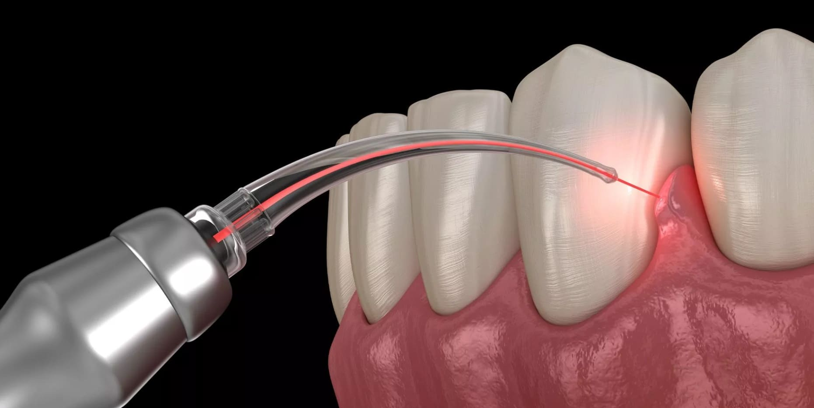
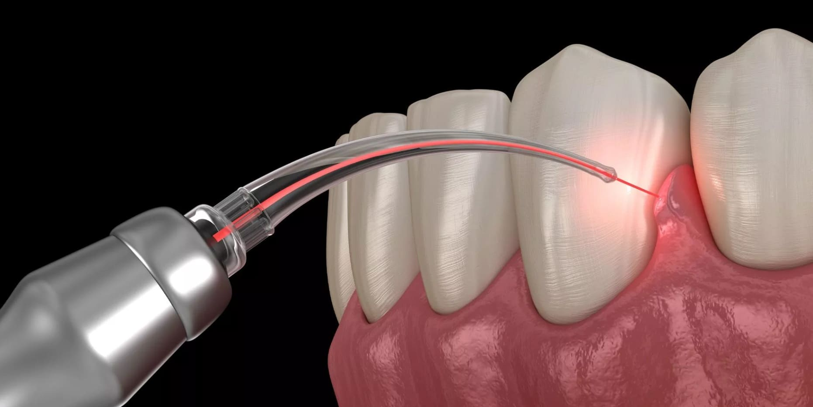

Advanced Dental Technologies
At 100SMILES Dental Care, we're committed to providing the highest standard of dental care through the latest advancements in dental technology. Our investment in cutting-edge equipment ensures more accurate diagnoses, more comfortable treatments, and better outcomes for our patients.

 



Digital X-Rays
Our state-of-the-art digital X-ray system provides high-resolution images with significantly less radiation exposure compared to traditional X-rays. This technology allows for quicker and more accurate diagnoses, ensuring that we can address dental issues promptly and effectively.
Intraoral Cameras
Our intraoral cameras offer a detailed view of your mouth, allowing us to capture high-quality images of your teeth and gums. This technology enhances our ability to detect and diagnose dental problems early, and it also helps us to better explain treatment options to our patients.
Laser Dentistry
We have incorporated advanced laser technology into our practice, which allows for minimally invasive procedures with reduced pain and faster healing times. Laser dentistry is used for a variety of treatments, including gum disease therapy, cavity detection, and teeth whitening.
CAD/CAM Technology
Our CAD/CAM (Computer-Aided Design and Computer-Aided Manufacturing) system enables us to create precise and custom dental restorations, such as crowns, bridges, and veneers, in a single visit. This technology ensures a perfect fit and natural appearance, providing our patients with durable and aesthetically pleasing results.
3D Printing
We utilize 3D printing technology to create accurate dental models, surgical guides, and custom appliances. This innovation allows for more precise treatment planning and improved outcomes for our patients.
Teledentistry
Our teledentistry services provide convenient access to dental care from the comfort of your home. Through virtual consultations, we can assess your dental concerns, provide professional advice, and develop treatment plans without the need for an in-office visit.
Experience the Difference
Ready to experience the benefits of modern dental technology? Book a consultation today and see how our advanced equipment can improve your dental care experience.
Book a ConsultationSpecial Offers
Free Dental Checkup Event on Saturday, July 5th, starting at 9 AM. Limited slots available!
25% discount on your next visit when you book through our online form. Use code: ONLINE25
Until April 30, 2025, enjoy a 10% discount on our Annual Dental Check-Up package*
*The Annual Dental Check-Up package includes: Physical Examination, Cleanings, X-Rays, Dental Check-Up, Nutritional Guidance, and Blood Tests or Laboratory Work (if necessary).